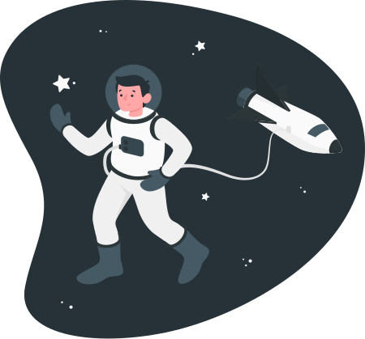

<section id="about">
    <div class="container rounded-5 container-light">
      <div class="row align-items-center p-5">
        <div class="col-lg-5">
          
        </div>
        <div class="col-lg-7">
          <h1 class="display-4">About</h1>
          <p class="">
            Hello everyone! My name is Anirudh, and I am an engineer who builds
            projects and web applications inspired by what I find on the internet.
            I'm not limited to any specific technologies, as I am always expanding
            my technical knowledge, although I have a preference for Python and
            AI.
          </p>
          <p>
            I am always searching for new ideas and people to meet, as I want to
            broaden my experiences and knowledge. When I'm not working, I enjoy
            reading, playing video games, cooking, and I have recently taken an
            interest in writing a blog.
          </p>
          My tech stack mainly includes:
          <ul>
            <li class="list-group-item">>Python</li>
            <li class="list-group-item">>Django</li>
            <li class="list-group-item">>Node.js</li>
            <li class="list-group-item">>Angular</li>
          </ul>
        </div>
      </div>
    </div>
  </section>
  